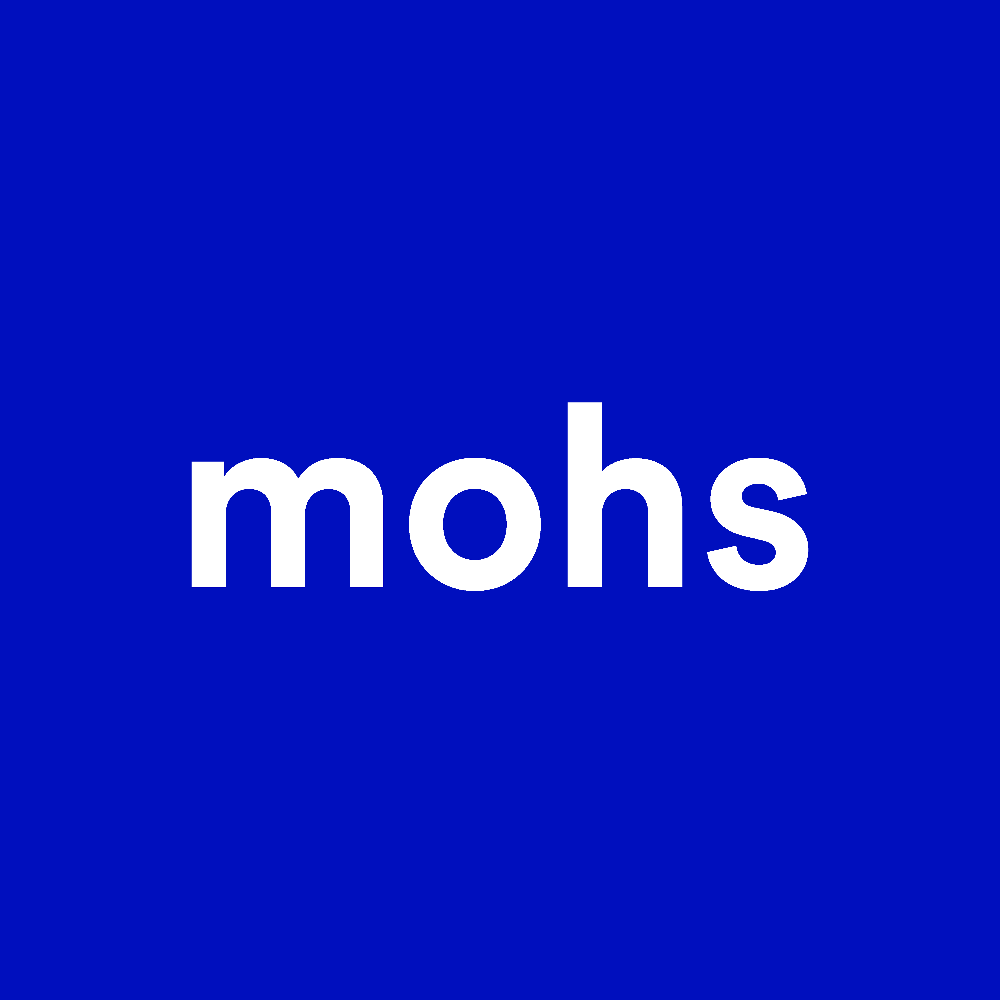
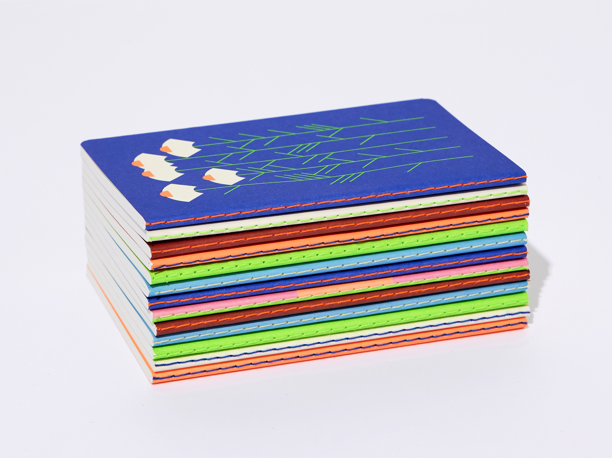
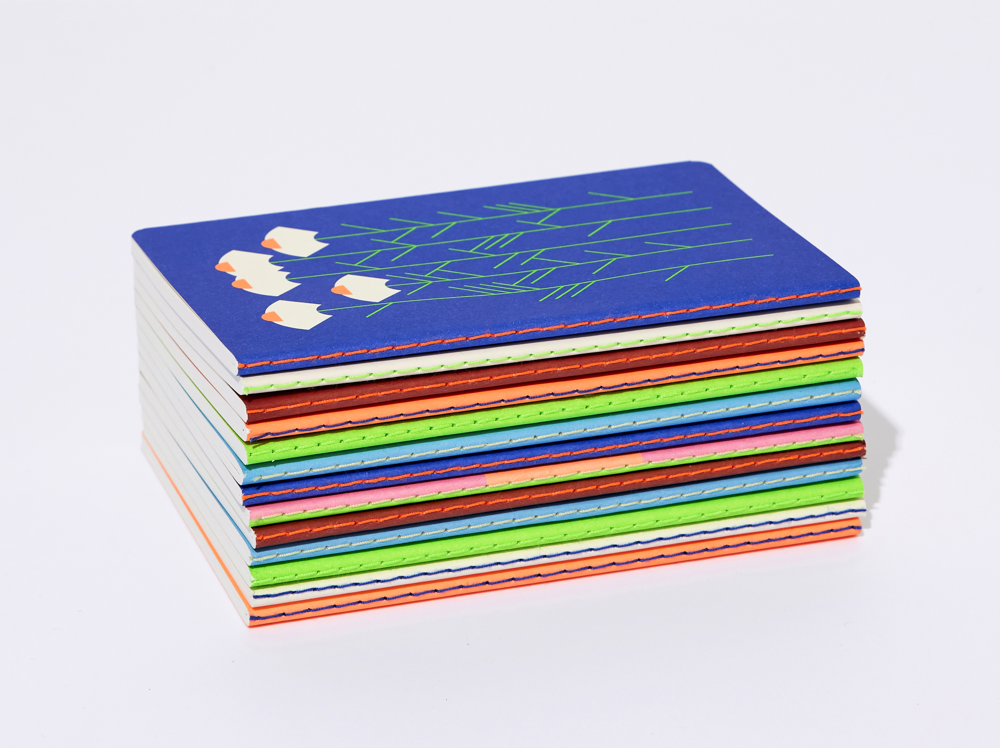

안녕하세요. mohsgraphic 소개 부탁드립니다.
오모스그래픽은 서울을 기반으로 활동하고 있는 디자인 스튜디오입니다. 자연을 담은 컬러와 그래픽을 통해 표현의 즐거움을 보여주고자 하며 일상을 밝게 하는 디자인과 다양한 물건들을 만듭니다.

구겨지는 랩 페이퍼, 다양한 형태의 DIY 스티커 등 상품의 톡톡 튀는 아이디어가 돋보입니다. 제품이 탄생하게 된 계기가 무엇인가요?
다양한 디자인 작업을 하며 그만큼 좋은 인연이 많아졌는데요, 항상 무언가를 선물하고 싶다는 마음이 있었기에 모두가 좋아할 노트를 만들어 보내줘야겠다고 생각해서 노트를 디자인했습니다. 그런데 생각보다 노트가 퀄리티가 좋아지고 종류가 많아지면서 팔면 어떠냐는 주변의 제안이 있었고요. 고민하던 중 작년 한해 강의 및 업무에 관련된 일들이 비대면으로 이루어지면서 택배를 주고받는 일이 많아졌고, 그중에 꽤 많은 분들이 택배 박스 안에 교정지나 계약서, 책뿐 아니라 늘 간식거리(초콜릿, 과자, 티백 등)와 함께 작은 메모를 넣어 보냈습니다. 자연스럽게 저도 메모나 작은 물건을 넣어 보내게 되었죠. 얼굴을 본 적은 없지만 택배 하나로도 이렇게 친근감을 느낄 수 있다니 새로운 경험이었습니다.
그렇게 메모지를 만들어야겠다는 생각에 하다 보니 POST BOX CARD를 제작하게 되었고요, 이어서 너무 정성을 들이지 않아도 될 포장지가 필요하여 포장지를, 택배 상자를 패킹해서 보내려고 보니 허전해서 스티커를 제작하게 되어 POST BOX 시리즈 제작물이 탄생하게 되었습니다.
긴 메모를 손글씨로 적기는 힘들 듯하여 간단한 안부 인사나 ‘감사합니다’를 적을 수 있는 사이즈로 한 장씩 뜯어 쓰면 부담이 없을 것 같아 사이즈를 작게 하면서 분량에 따라 길게도 쓸 수 있게 만들었고, 깔끔한 포장을 힘들어하는 스타일이라 거친 손을 커버할 수 있는 포장지를 생각하며 구겨도 자연스럽고 잘못 재단해도 티가 안 나는 감각적인 느낌을 담으려고 만들게 되었는데 결국에는 다 제가 사용하면서 필요한 것들을 만들게 된 것 같아요.

29cm 론칭 시 진행한 댓글 이벤트의 ‘당신의 일상을 밝히는 색이 있나요?’라는 질문이 참 재미있었습니다. 요즘 내 일상을 밝히는, 내 기분을 밝게 해주는 색은 무엇인지 생각해 보았던 것 같아요. 석윤이 디자이너님의 일상을 밝히는 색은 무엇인가요?
한 번에 떠오르는 색은 ‘블루’입니다. 이번 이벤트에 댓글에서 맑은 하늘과 자연을 떠오르게 하는 컬러가 가장 많은 걸 보니 대체로 비슷한 생각을 하고 있는 것 같아요. 시원한 블루를 좋아하지만 옷을 입을 때는 대체로 무채색을 선호하는 편입니다. 블랙, 그레이와 같은 모노톤과 채도가 높은 컬러가 어우러지는 걸 볼 때 눈이 즐거워집니다. 결국 여러 가지 색이 공간, 상황에 맞게 잘 조화될 때 만족감이 가장 큰 것 같습니다.
 

북 디자인 작업에서 SM폰트를 사용하신 것도 많이 보입니다. 직지서체를 사용한 북 디자인 작업을 소개해 주세요.
SM신명조는 본문에 가장 많이 사용해왔고, SM견출명조, SM중명조는 표지, 본문 등에 꾸준히 사용하고 있습니다. SM견출명조, SM중명조를 사용한 책 표지로는 최근에 나온 열림원 프랑스 여성작가 소설 시리즈의 <나는 나의 밤을 떠나지 않는다> <죽은 백인 남자들이 다 그런 건 아니겠지>(문예), <예쁘다, 너>(몽스북), <살리는 일>(무제), <친애하는 나의 집에게>(라이트앤페이지) 등등 많이 있고, SM신명조를 표지에 사용한 경우는 <비용의 아내> <인간의자> <레몬> <호랑이 사냥>(북노마드) 등이 있습니다.